記事・リンクを検索
⌘K
25 件のポスト

Malte Resenberger-Loosmann氏による記事「The Art of Observation: Mastering Hero Assets」。現実世界のリファレンスの観察・分析からマテリアルレイヤーの見極め、3Dへのディテール落とし込みまでのアプローチが述べられている。

Malte Resenberger-Loosmann氏のページにある他の記事。「Mastering Materials: Noise」「Breakdown Rust Material」「The 10 Layers Strategy」「Desert Eagle」など、マテリアル制作の知見がまとめられている。

リアルタイムレンダリングにおけるTriplanarマッピングの計算負荷（LinkedInの投稿を引用して紹介）。UV展開が不要で便利だが、サンプル数が3倍になる分のコストは単純比例せず、L1/L2キャッシュの挙動に左右されるという技術的な補足がある。

Triplanarの計算負荷への対応策として、面の向きに応じてplanar projection（地面など上向きの面）とbiplanar projection（建物など横向きの面）を選択的に使い分けるという手法。
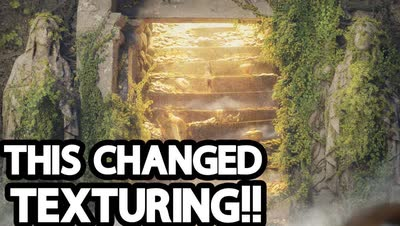
弾痕からグラフィティまで、デカールがゲーム環境や3Dモデルをどう変えるかを、歴史と現代的な手法の両面から扱った解説。

Vincent Gagnon氏による、GaeaをSubstance Designerの一部として活用する試み「Eroded Dirt Mound」。Gaeaは浸食表現に優れるがタイル化に不向きなため、Substance Designerで補いテクスチャとして使えるかを検証している。
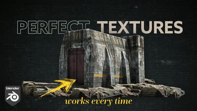
Blenderでテクスチャを扱う際に、投稿者が毎回のシーンで使っているという4つの手法を7分弱で紹介する動画。
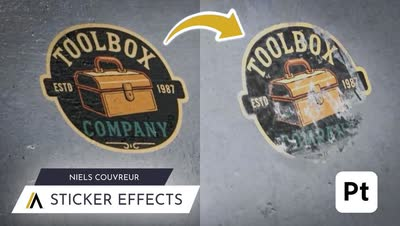
ステッカーをただ貼るのではなく、リアリティと物語性を足す効果とともに配置する手法を、Sierra Division Academyの講師が段階的に解説する。
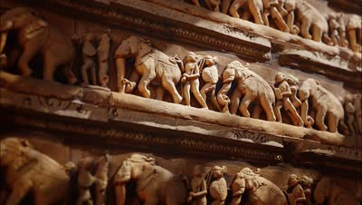
Stable Diffusionで画像から深度マップを生成し、それをディスプレイスメントマップとしてジオメトリを起こすまでの手順解説。

Blenderでフォトリアルなテクスチャを制作する方法を解説する動画。
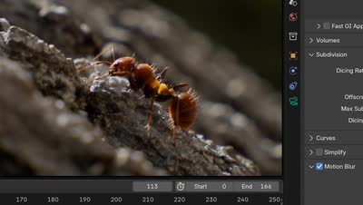
フォトグラメトリの取り方、ジオメトリの最適化、アダプティブディスプレイスメント、ライティングまでを5分にまとめたマクロ表現のチュートリアル。
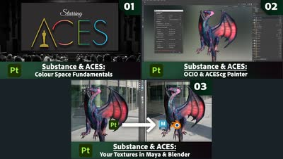
Substance 3D PainterでACESを扱うための公式解説シリーズ。カラースペースの基礎、PainterでのOCIO設定、Maya・Blenderへの受け渡しを3本で扱う。

Megascansなどのスキャンアセットを組み合わせることで、低コストでリアルな岩や崖を制作できる手法（参考動画つき）。同じ作品で、崖に草を生やすマスクをNormal+AO併用で作るとよりリアルになるというTipsも。
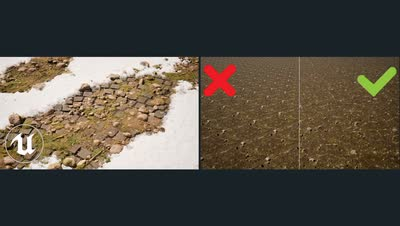
NaniteテッセレーションとハイトLerpを使った頂点ペイントの回と、テクスチャの繰り返しを解消するセルボミングの回の2本。
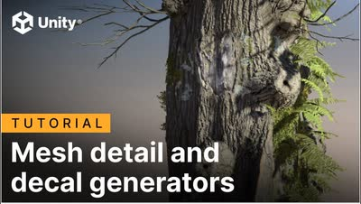
SpeedTreeの新しいジェネレータ2種を解説。樹皮の外側にハイポリのディテールを加えて、不自然な規則性や繰り返しを隠す用途を扱う。

HoudiniのAtlas Texture Generatorについて解説する動画。

UDIMが何十枚にもなるような大規模アセットのテクスチャリングに役立つ、Substance Painterの「Layer Instancing」機能。
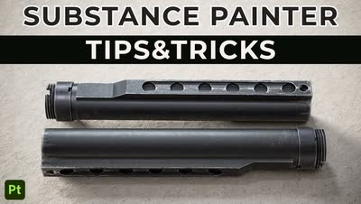
Substance Painterの知っておくべき強力なテクニックを解説する動画。
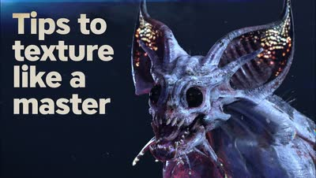
ILMのシニアテクスチャアーティストSam Alicea氏が、Blizzardのキャラクターアーティストとの共作を題材にMARIでのテクスチャリング工程を解説するブレイクダウン。
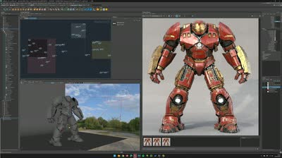
映画キャラクター「ハルクバスター」のテクスチャリングを解説するチュートリアル。
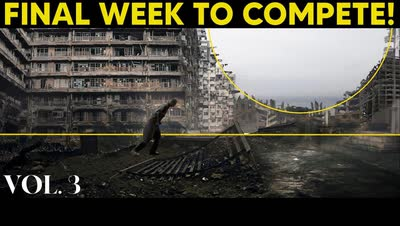
pwnisher氏が下水道環境にディテールを足していくライブ配信。継ぎ目のないコンクリートを作るカスタムテクスチャの手法などを扱う約4時間の内容。

KarmaのRoomMap機能を使って部屋の中をテクスチャで再現するチュートリアル。

ゲーム環境における汚れや風化の表現について解説する動画「Weathering & Grime in Game Environments」。物理法則に基づいたシェーディングを学べる内容。

靴やカメレオンなどをテーマにしたテクスチャリングのチュートリアル。Substance Painterの使い方が参考になり、背景制作にも活かせるとしている。

HoudiniのCOPsを使ったテクスチャリングのチュートリアル動画。1時間の動画で斧のテクスチャ制作を解説している。